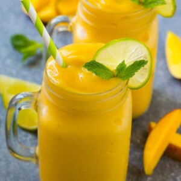

Mango Smoothie Recipe
Home

Description
This mango smoothie is made with frozen mango, yogurt, banana and juice, all blended together into an ultra creamy drink. A super refreshing way to cool off on a warm day.
Ingredients
- 1 1/2 cups mango nectar can substitute a different type of juice such as apple or orange juice
- 1 banana cut in half
- 3/4 cup vanilla Greek yogurt
- 1 1/2 cups frozen mango chunks
- lime slices and mint springs for garnish optional
Instructions
- Place the mango nectar, banana, Greek yogurt and mango chunks in the blender
- Blend until completely smooth
- Pour until 2 glasses and serve, garnished with lime and mint if desired